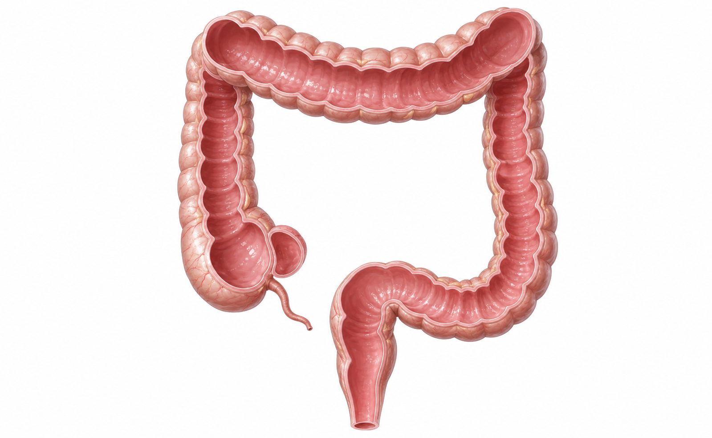

대장내시경 용종절제술 후 주의사항
대장 안 용종을 떼어낸 자리에는 작은 상처가 남습니다. 지연출혈(며칠 뒤 다시 피가 나는 것)은 드물지만 2주 안에도 생길 수 있어, 아래 기준을 보호자와 함께 확인해 주세요.
119
2주 안 응급 신호: 진료시간엔 병원 전화, 야간·주말엔 119/응급실
피변기 물이 붉어짐, 검붉은 피·검은변, 피덩어리
어지러움식은땀, 실신감, 얼굴이 창백함
복통점점 심해짐, 배가 심하게 빵빵함
열·구토·숨참38도 이상 발열, 오한, 반복 구토, 숨참

진료 중 담당의가 용종 위치와 주의 부위를 펜으로 표시하는 공간입니다. 병변 위치와 추적검사 시점은 시술기록·조직검사 결과를 함께 보고 설명합니다.
먹기·움직이기: 기간별 기준
오늘
물부터, 미음·죽·부드러운 음식 소량. 휴지에 살짝 묻는 피만 관찰, 변기가 붉으면 응급 기준입니다.
1-2일
증상 없으면 부드러운 일반식. 맵고 기름진 음식, 씨앗·견과·질긴 고기는 줄입니다.
24시간
수면/진정 후 운전·기계작업·요리·음주·중요 결정 금지.
2주
큰 용종(>1cm)·소작·EMR은 무거운 물건·격한 운동·사우나·장거리/해외여행·술을 피하세요.
약·연락: 자가 판단 금지
약 이름: ________
다시 복용: ____월 ____일 ____시 / 확인: ______
- 아스피린·플라빅스·와파린·엘리퀴스·자렐토 등은 적힌 날짜대로만 다시 복용합니다.
- 날짜가 없거나 출혈·검은변·어지러움이 있으면 복용 전 전화로 확인하세요.
- 심장스텐트·뇌졸중·심방세동·혈전 병력자는 임의 중단·연기 금지.
- 통증은 아세트아미노펜 우선. 이부프로펜·나프록센 등은 지시 전 피하세요.
- 조직검사 결과와 다음 내시경 시점은 용종의 크기·개수·조직결과로 결정합니다.